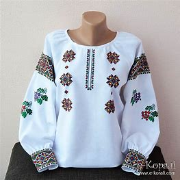

Історія Вишиванка
Українська вишиванка: історія, символіка та її особливості Українська вишиванка - традиційна вишита сорочка - зірка української культурної ідентичності, одяг, який втілює в собі багатовікову історію, символіку та мистецьке вираження. Як невід’ємна частина українського народного вбрання, вишиванка не лише прикрашала народ України, але й формувала наратив стійкості, духовності та національної гордості. У цій статті ми спробуємо заглибитися у різноманітність візерунків в історії української вишиванки, дослідимо її походження, еволюцію, символізм та багатогранність.
Історія української вишиванки Витоки української вишиванки сягають раннього середньовіччя, періоду правління Київської Русі (IX-XIII ст.). Спочатку він був практичним, прикрашав одяг і предмети побуту простими геометричними візерунками. Впливи візантійської та східнослов’янської культури відіграли ключову роль у формуванні ранньої техніки вишивання.
З плином часу (у XV-XVII ст.), вишиванка перетворилася на щось більше, ніж просто прикрасу. Вона набула глибокого та символічного значення. В буремні часи (XVIII-XIX ст.) правління Речі Посполитої, Австрійської імперії чи Російської імперії, Україна та її культура зазнавали утисків. Вишиванка стала важливим засобом збереження культурної самобутності та національної ідентичності. Навіть у важкі часи український народ виражав свої почуття та бажання через унікальні візерунки на вишиванці. У радянський період, і коли Україна була частиною Радянського Союзу, національна культура України обмежувалася під страхом смерті. Тим не менш, вишиванку продовжували носити з гордістю, як символ мовчазного опору та збереження української ідентичності в умовах репресій. Хоча варто визнати, що саме в цей період українська традиційна вишиванка зазнала чи не найбільшої біди, оскільки саме тоді було знищено незліченну кількість автентичних вишитих скарбів, створених українськими майстринями, а носіння вишитого одягу могло стати вироком для власника. Та, попри все, українську вишиванку вдалося зберегти, як і традицію її носити, а зараз вона переживає чи не найпрекрасніший етап відновлення і вивчення. На знак визнання її культурної значущості українську вишивку, включно з вишиванкою, у 2018 році було внесено до Репрезентативного списку нематеріальної культурної спадщини людства ЮНЕСКО. Це підкреслює важливість збереження та популяризації цієї давньої традиції у світі.
Вишиванка
Вишиванка – яскравий елемент усієї української культури. Вишита автентична сорочка пережила чимало перипетій упродовж багатьох століть. Сьогодні, у День народження цього виробу, згадуємо його історію та аналізуємо, як українські орнаменти залишаються популярними вже кілька сезонів поспіль.
Призначення
Вважається, що основне призначення вишивки — прикрашання одягу та інтер'єрно-обрядових тканин.
Традиційні орнаменти, стилі
Українська сім'я у вишитих сорочках. Запис програми «Різдво у долі Івана Франка» Візерунки: геометричні елементи в українській вишивці (ялинка, ромби, кола, хрести, хвилясті лінії води, геометричний меандр, горизонтальні знаки землі), зображення тварин: кінь птахів: голуби, журавлі, качки, півні рослин дерево життя — верба, дуб, явір та ін.; листя, плоди, «гарбузові листя», «хмелик» квіти: «барвінок», лілея, троянда (рожа) змії людей із ромбоподібними тулубами, хрестоподібними головами комахи: «зозулька», «бджілка», «павучок»[5][6]. В Україні налічувалось близько 100 видів і технічних прийомів вишивання (гладь, хрестик, низь, мереження, бігунець, плетіння тощо).
